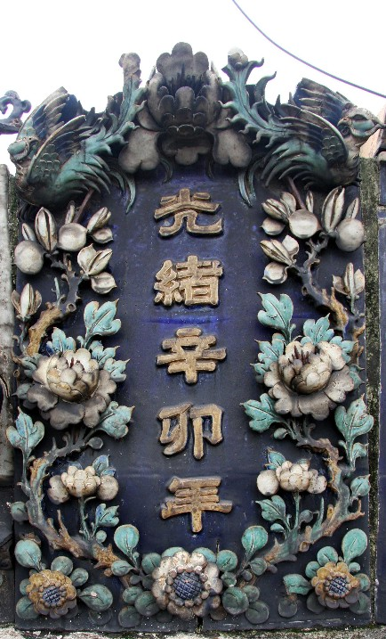

凤凰是我国古代传说中的神鸟，也是鸟中之王，象征美丽和祥瑞；牡丹被称为
百花之王，具有荣华富贵之态。凤凰牡丹象征祥瑞、富贵，寓意美满和幸福。花板内镶“光绪辛卯年”
、“文如壁店造”，表明此瓦脊为光绪辛卯年（1891年）由文如壁店造。文如壁店：文如壁，顺德人，
清康熙年间制陶名家，早期精制日常用具，为众喜爱，以名开店，后期精制各类屋脊饰物，技艺精湛，
直至光绪年间，是花盆行的主要店号。子孙承继家业，在民国初年分为两店，一为“如壁生记”，一为
“如壁”，二十世纪20年代歇业。
「位于：首进正中」